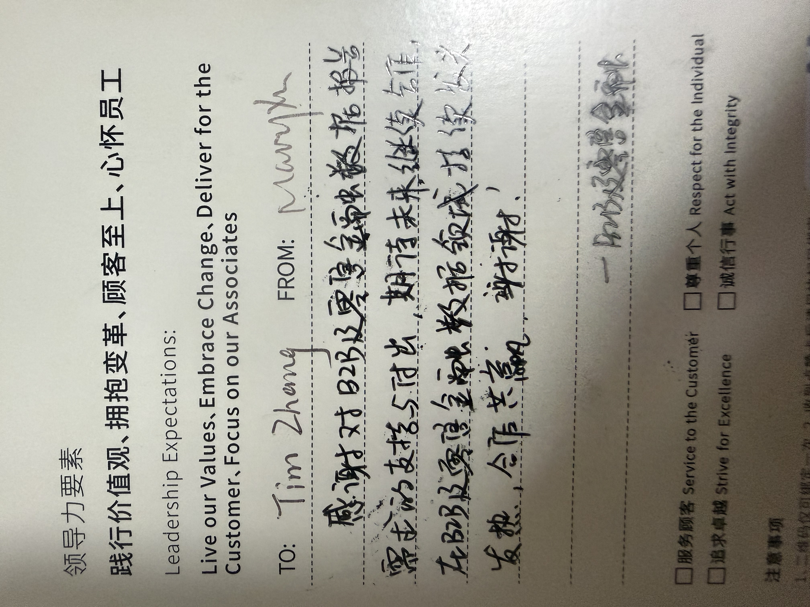
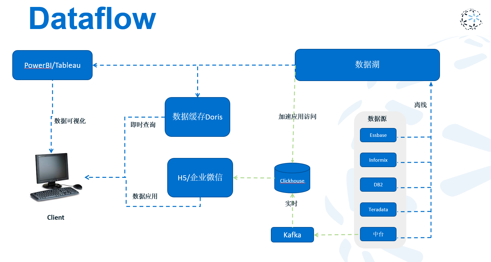
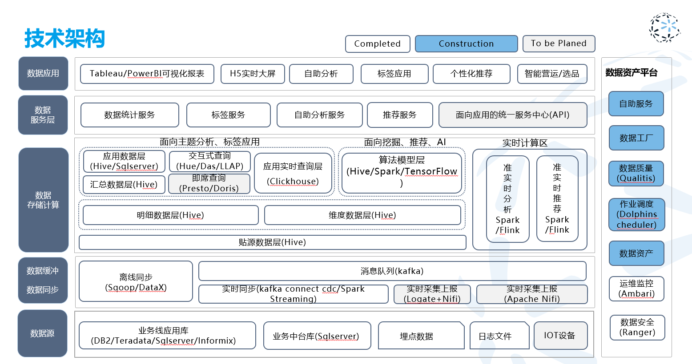
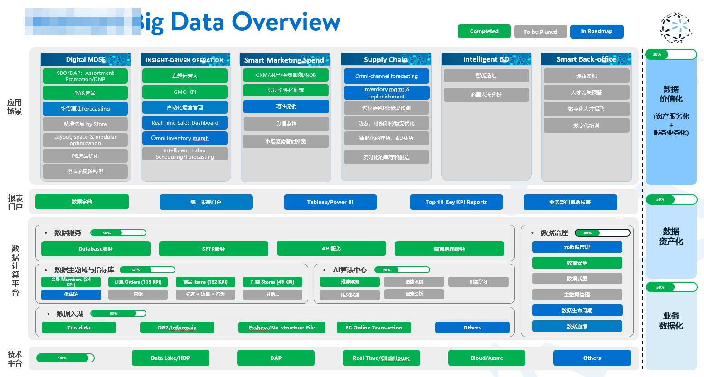
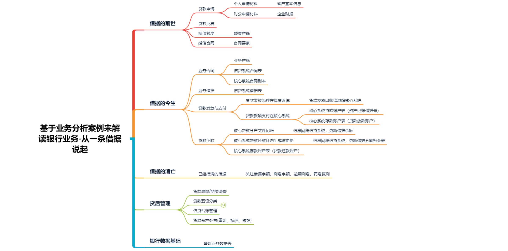
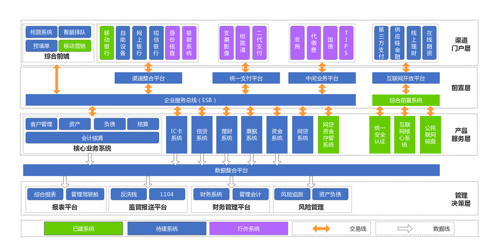
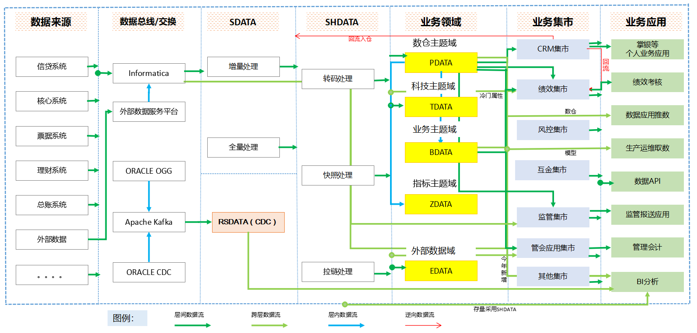

Best Fit
Data Engineer, AI Engineer, applied ML/LLM engineer, or hybrid data + AI product roles.
Data + AI systems for real workflows
Open to Data & AI Engineering rolesI am Weijian (Tim) Zhang, a data engineer and AI-driven pipeline architect. I work across the full chain: ingestion, modeling, retrieval, evaluation, service design, and cloud deployment, with delivery experience spanning Hong Kong GovTech, insurance fraud detection, clinical gait AI, multinational retail enterprise data platforms, and commercial bank data middle-platform programs.
Featured work includes an award-winning SRR Agentic Case Processing System, Uniflo software-hardware multi-end intelligent continuous delivery, MCC FWA insurance fraud graph intelligence, GaitGPT privacy-first gait research assistant, and enterprise warehouse modernization. The resume points here; the portfolio shows the systems.
Best Fit
Data Engineer, AI Engineer, applied ML/LLM engineer, or hybrid data + AI product roles.
Strongest Areas
Agentic workflows, clinical/financial AI, retrieval pipelines, data quality automation, and FastAPI services.
What Teams Get
Someone who can connect warehouse discipline, model behavior, and production pragmatism.
About
My background is anchored in data engineering, but the through-line has always been operational reliability. I started with enterprise data warehouse design and large-scale analytics, then moved into real-time monitoring, AI-assisted workflows, and cloud-native service delivery.
That combination matters because many AI projects break at the seams: weak ingestion, brittle retrieval, unclear evaluation, or deployment paths that are hard to maintain. I enjoy building across those seams so the system behaves as one coherent product rather than a chain of disconnected tools.
I hold an MSc in Artificial Intelligence and Business Analytics from Lingnan University and bring hands-on delivery experience from Hong Kong government innovation work, clinical gait AI, insurance fraud detection, multinational retail enterprise data platforms, and commercial bank data middle-platform programs.
Education
Lingnan University, Hong Kong · 2025–2026
AIBA coursework: Foundation of AI, Business Data Management, Data Analytics & Programming, Healthcare Analytics, Data Visualization, Programming with Generative AI, AI-Based Optimization.
Bachelor of Management · Shenzhen University · 2013–2017
Domain Context
Environments where data quality, business rules, and stakeholder trust are not optional.
Working Style
I like architectures that are measurable, explainable, and production-ready from day one.
Publications, Patents & Awards
This is the compact signal layer for outcomes beyond delivery: competition recognition, patent disclosure materials, and manuscript work that is still positioned as in preparation.
Hong Kong Lingnan University MScAIBA team case on SRR civic-service automation; 163 teams entered and 8 advanced to the final.
A Bidirectional LLM Framework for Literature-Grounded Clinical Gait Analysis; manuscript in preparation.
Patent disclosure in preparation for file-driven intake, retrieval, quality control, rollback, and response drafting in public-service complaint workflows.
University IP materials are in process; patent-sensitive implementation details are withheld during filing.
Patent disclosure in preparation for multi-model fusion that discovers cross-modal visual relationships inside file knowledge graphs.
Capabilities
I am most useful when the problem needs both infrastructure rigor and application-layer intelligence: reliable ingestion, clean modeling, retrieval quality, evaluation, and deployment that can survive real-world use.
01
02
03
Python, SQL, FastAPI, Docker, Linux, GitHub, Airflow, DolphinScheduler
LangChain, LangGraph, OpenAI API, Gemini, pgvector, Neo4j, PubMed, Semantic Scholar, LLM-as-Judge
Power BI, Tableau, GCP, StarRocks, SQL Server, PostgreSQL, Google Spanner Graph-ready design
Selected Projects
These projects are arranged around the kind of work I am targeting: hybrid data and AI engineering roles where product usefulness depends on both infrastructure discipline and intelligent workflow design.
Award-Winning GovTech Case
Technical Lead · 99.4% contribution · Lingnan Cup 2nd Prize · Guangzhou TV segment · Patent filing in preparation · Public reference implementation
Three-stage repo evolution
80,430 lines delivered across two internal iterations before the public version.
View SRR-Project-Team SO_PRD25 product video
Background -> pain points -> solution -> future roadmap
Open video
SO_PRD25 product video
Background -> pain points -> solution -> future roadmap
Open video
 CIC AI Award preparation
Construction-sector pitch material built from the SRR workflow story
Open video
CIC AI Award preparation
Construction-sector pitch material built from the SRR workflow story
Open video
Situation
Hong Kong public-service SRR handling relied on multi-channel materials, manual routing, historical lookup, and repeated field interpretation.
Task
Turn the process into a controllable case-processing system that could parse ICC 1823, TMO, and RCC inputs, extract A-Q fields, and draft traceable replies.
Action
Designed a seven-layer agentic architecture with 17 atomic capabilities, pgvector + RRF retrieval, three-tier evaluation, Best-of-N repair, and rollback logic.
Result
Delivered 12/12 requirements and 80,430 lines across internal iterations, then converted the work into a public reference repo, TV-covered case, award proof, and patent-prep narrative.


Multi-End AI Delivery Platform
Core Builder · Product and runtime architecture · Multi-end delivery · Workspace permissions · Skill orchestration · Traceable Application candidates
Platform loop
Product thesis: UniFlo connects software workflows, hardware-facing capture points, and multi-end interfaces into continuously deliverable intelligent task spaces.
Open OpenUniflo repositorySituation
Knowledge workers have files, meetings, chats, notes, and prior AI outputs scattered across tools, while ordinary chat assistants lose context after the current conversation.
Task
Build an Agent Runtime and multi-end delivery platform where complex work can be organized as task spaces, use confirmed context, and turn repeatable execution patterns into reusable Applications.
Action
Implemented and iterated across the Python runtime, React Web UI, OpenAI-compatible API, skill system, workspace file access, permission guards, trace events, and Application candidate lifecycle.
Result
Moved UniFlo from product thesis into an evolving platform codebase with runnable workflows, source-linked execution records, and patent-prep directions around file knowledge graphs, multi-end capture, and evidence-safe agent workspaces.
Relevant files, memory, task goals, capture inputs, and generated results are referenced through task spaces rather than pasted into one chat.
Built-in and reusable skills can coordinate API, Web, workspace, and target capture flows, then save successful workflows as Application candidates.
Workflow planning, steps, tool events, source runs, endpoint evidence, and asset metadata make delivery easier to audit than a plain chat transcript.
InsurTech Graph Intelligence
Core Developer · GraphDB foundation · Claims adjudication workflow · Neo4j validation · Spanner Graph-ready design
Pipeline shape
Graph first because FWA risk often appears in relationships, not a single field.
Graph Pipeline
The system turns raw claim records into portable nodes and edges, validates paths in Neo4j, and prepares the model for future Google Spanner Graph deployment.
Situation
Insurance FWA review faces high claim volume, sparse confirmed fraud labels, and risk signals that often hide across patients, providers, diagnoses, receipts, and amount patterns.
Task
Create a data foundation that lets reviewers inspect risk paths instead of reading isolated claim fields or opaque model scores.
Action
Converted 38,659 claim JSON files into a 1.61M-node / 2.57M-edge property graph, validated paths in Neo4j, and supported FastAPI async review with medical-necessity, policy, and rejection-code reasoning.
Result
The output shifts the review surface from approve/reject labels to explainable evidence trails: risk score, reason code, related entities, and claim-level summary that an assessor can audit.
Claim, event, provider, diagnosis, receipt, billing, breakdown, and amount-feature entities.
Single-claim path inspection helps explain why entities are linked in a review trail.
Portable CSV extraction keeps the graph foundation independent from one graph database.


Gait Research AI System
Architecture Lead · Manuscript in preparation · iCAN 2026 application · University IP materials in process
Target venue options under review: Sensors, AMIA / MICCAI workshop tracks, or BMC Medical Informatics.
Prepared for Medicine & Health Care and IT & Data Technology categories, with a finals video asset ready.
University IP materials are in process; patent-sensitive implementation details are withheld during filing.
Situation
Gait systems produce dense sensor indicators, while clinicians often reason in symptom language such as limping, shuffling gait, or asymmetry.
Task
Build a privacy-first assistant that can answer structured gait-data questions, support research-to-clinical communication, and keep high-risk output under clear engineering controls.
Action
Combined NONSD-Gait data, rule-template-first query handling, PubMed / Semantic Scholar retrieval, structured findings, and biomechanics-aware validation.
Result
Produced a 20-question benchmark with 0.9223 overall accuracy and 10.07s median response time, forming the basis for manuscript, iCAN, and university IP preparation.
Demo media is withheld while university IP filing is in progress.
Demo Video
Protected placeholder kept for the product demo slot; video access will return after the patent-sensitive review window.
Enterprise Data Backbone
Data Engineer · B2B finance and operations reporting · Cloud warehouse modernization · SOX-aware delivery
Business data scope
Enterprise value came from making finance and operations data explainable, reusable, and fast enough for daily decisions.
Situation
B2B finance and operations reporting depended on fragmented PNL, B2B, HR, Leasing, order, contract, billing, inventory, gift-card, fulfillment, and enterprise-account sources.
Task
Make daily decision data reusable and explainable across finance, operations, and dashboard teams through B2B refined management, data-asset mapping, lineage, and T+0 data quality response.
Action
Migrated 10TB+ workloads, rebuilt ODS / DIM / DWD / DWS / ADS layers, connected CRM / OMS / B2B / gift-card / warehouse / finance sources, and tuned Hive, SparkSQL, StarRocks materialized views, Seatunnel, and scheduling paths.
Result
Improved the finance data foundation by 50%+, cut ETL runtime by 87.5%, reduced disk usage by 38%, improved query speed by 55%, and moved core StarRocks analytical queries from 3-10 minutes to an average 0.8s.




Commercial Banking Data
Data Engineer · Model-layer maintenance · SQL delivery · Banking stakeholder communication
Banking data discipline
Banking value means definitions are stable, lineage is traceable, and downstream reporting can be trusted.
Situation
Commercial-bank reporting depends on strict definitions for credit, limits, contracts, core lending, loan accounts, loan receipts, disbursement, repayment, settlement accounts, and downstream product indicators.
Task
Support financial, regulatory, and management reporting while leading credit-domain model maintenance, limit-system upgrade work, and core lending migration impact analysis.
Action
Maintained model-layer SQL, delivered SIT/UAT reports, optimized 30+ issue points, implemented 15 key limit models, mapped source systems through data-bus / SDATA / SHDATA / domain / mart layers, and tuned Impala skew plus UDF repricing-date logic.
Result
Built bank-grade delivery habits: clear semantics first, controlled change second, traceable issue handling, stable reporting outputs, and reusable credit / limit / lending model knowledge before presentation polish.



Additional Work
Delivered data modeling, cloud migration, and warehouse optimization across banking and retail contexts, including commercial bank data middle-platform and multinational retail enterprise data platform environments.
Resume
If you want the complete timeline, project detail, and technical background, the resume includes the full version. It is designed to point back to this portfolio, where SRR, Uniflo, MCC FWA, and GaitGPT show the system proof, architecture decisions, and project narrative.
Snapshot
2019–2025 Enterprise data engineering across banking, retail, and cloud data platforms.
2025–2026 SRR, Uniflo, MCC FWA, and GaitGPT: applied AI systems with evidence, evaluation, and deployment stories.
Core promise Strong foundations, measurable outcomes, and systems that can be maintained.
Contact
I am especially interested in roles where data reliability and intelligent application design need to work together, not compete with each other.
Phone
HK: +852 84965467
Mainland: +86 131 6809 0613
GitHub
github.com/February13Best fit
Data Engineer, AI Engineer, Platform Engineer, or hybrid data + AI product roles.